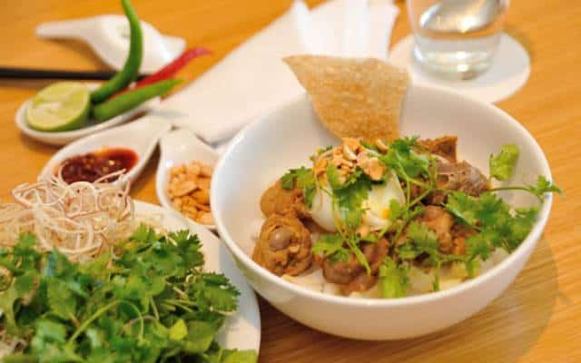

Mì Quảng
Mì Quảng là món ăn nổi tiếng bậc nhất Quảng Nam. Không một con phố, ngõ ngách nào mà không bán mì Quảng. Khi đến đây du khách không thưởng thức món này thì thật là đáng tiếc. Chắc hẳn không có người dân xứ Quảng nào không biết nấu mì tại nhà. Việc nấu và thưởng thức mì Quảng trở thành thói quen thường xuyên trong mỗi gia đình. Sợi mì được làm từ bánh tráng thái thành sợi, mềm, dai. Nước dùng đa dạng, chế biến nhiều nguyên liệu khác nhau như: gà, lươn, cá lóc, ếch, bò, tôm, cua…Ăn mì Quảng thì không thể thiếu cái bánh tráng nướng, ớt, chanh, hạt đậu phộng, chén nước mắm nguyên chất, rau sống đi kèm. Rau sống được chuẩn bị cầu kỳ, cần tới 9 loại rau sống: rau muống chẻ, giá, cải cay, bắp chuối…Có lẽ vậy mà khi ăn mì không có cảm giác bị ngán, khô mặc dù ít nước dùng, mì mang đậm hương vị xứ Quảng, làm nức lòng du khách.Mì Quảng là món ăn dân dã với người dân Hội An, bất kỳ du khách nào khi thưởng thức đều nhớ mãi hương vị của nó. Có lẽ do đó mà Mì Quảng được công nhận là 1 trong 12 món ăn Việt Nam có giá trị ẩm thực châu Á.
Bánh tráng cuốn thịt heo
Ngoài mì Quảng, cao lầu thì khi đến Quảng Nam du khách không được bỏ lỡ món bánh tráng cuốn thịt heo cầu kỳ độc đáo có nguồn gốc ở chính nơi đây. Bánh tráng muốn dẻo, dai, thơm ngon thì phải chọn bánh tráng Đại Lộc chính hiệu. Bánh tráng gồm 2 loại là bánh tráng khô và bánh tráng nước. Bánh tráng khô hay còn gọi là bánh tráng lề có độ dai vừa phải dùng để cuộn, không mỏng như bánh đa nem của người Bắc cũng không quá dày như một số địa phương khác. Bánh tráng ướt là bánh tráng xong sử dụng luôn trong ngày, không phơi khô. Thịt heo ở đây là thịt ba chỉ hoặc thịt có mỡ hai đầu. Tiếp theo không thể không nhắc đến rau sống để cuộn cùng. Nếu rau sống được ăn là của làng rau Trà Quế ở Hội An thì có lẽ thật tuyệt vời. Rau sống được chọn là cải xanh, xà lách, húng quế, diếp cá, hành lá, rau thơm, rau đắng, giá, dưa leo, chuối chát… thuộc loại tươi non và không thể thiếu bắp chuối sắc mỏng, rau muống chẻ. Và cuối cùng là thứ không thể thiếu góp phần dậy nên hương vị khi ăn đó là bát nước chậm đậm chất xứ Quảng. Đặc biệt là nên thêm ớt xanh vào bát nước chấm, sau đó thưởng thức cùng bát nước mắm thơm nồng và còn nguyên màu vàng sóng sánh.
Bánh tổ
Bánh tổ – Hương vị tết Quảng Nam. Theo như truyền thuyết kể lại, bánh tổ là do mẹ Âu Cơ làm ra phát cho trăm con ăn dọc đường khi lên núi, xuống biển. Cũng có chuyện kể lại bánh tổ xuất hiện vào cuối thể kỷ XVIII thời Quang Trung, khi nhà vua tiến quân ra Bắc dẹp quân Thanh đã làm bánh này để đảm bảo lương thực dọc đường đi. Bánh tổ được làm từ 2 nguyên liệu chính là gạo nếp và đường. Nguyên liệu ban đầu phải được chọn lọc phải là loại hảo hạng nhất để làm được bánh vừa dai vừa dẻo, vị ngọt thanh chứ không phải ngọt lịm. Bánh có hình chiếc bát được bọc quanh một lớp lá chuối. Không gọi là chiếc bánh tổ mà gọi là ổ bánh tổ. Bánh có màu trắng, ngà, cà phê sữa hay đen tùy vào lượng và loại đường dùng để chế biến. Bên trên bánh được rắc một lớp vừng (mè), khi cầm bánh lên sẽ cảm nhận ngay được mùi thơm của vừng quyện với bánh. Có nhiều cách để thưởng thức món bánh hấp dẫn này. Có thể cắt ra ăn sống, nướng hoặc chiên giòn. Khi ăn sống có thể cảm nhận vị ngọt của đường, vị cay của gừng cùng vị dẻo của gạo nếp. Nếu nướng bánh sẽ dậy lên mùi thơm của gạo nếp, đường gặp nóng sẽ càng ngọt hơn, đượm vị hơn, ăn kèm cũng bánh tráng thì thật tuyệt. Có những du khách lại thích ăn món bánh được chiên giòn tan, phảng phất hương thơm. Một lát bánh chiên giòn kẹp với bánh nướng là sự lựa chọn yêu thích của nhiều du khách. Bánh tổ còn có một cái hay nữa là có thể để lâu, ăn dần dà cả tháng. Vì vậy du khách có thể mua về làm quà cho bạn bè, người thân.
Trái Bòong Boong
Bòong boong là một trong những đặc sản trái cây nổi tiếng của Quảng Nam. Trái này có nhiều ở vùng Đại Lộc, mùa thu hoạch vào các tháng 5, 6, 7 âm lịch. Nếu bạn muốn thưởng thức trái này thì hãy đến đây du lịch vào dịp cuối hè sang thu. Trái có vị chua, thơm, ngọt lạ lùng. Nhiều người khẳng định rằng chỉ ở Quảng Nam mới có trái bòong boong thơm ngon nổi tiếng. Cây boòng boong là loại cây cùng họ với cây dâu đất, trái kết thành chùm ở thân cây và ở cành, có chùm đơn, chùm kép, có chùm dài đến hai tấc rưỡi, trái kết có dáng đẹp như chùm nho. Trái ngon ngọt là loại trái không lớn, trung bình độ bằng đầu ngón tay cái, hơi bầu dục, vỏ màu vàng trắng, nuốm cuộn hơi căng phồng. Những trái to gần bằng ngón chân cái trông thì đẹp nhưng ít có trái ngon, những trái tròn, vỏ vàng đậm thường là không ngon, hơi chua. Những trái nhìn bên ngoài khá đẹp nhưng bóc vỏ ra nhìn thấy múi có nhiều hạt to và xanh là loại trái chua, những trái vỏ có chỗ còn phơn phớt xanh là trái chưa chín ăn rất chua. Những trái nhỏ phần nhiều là không ngon nhưng cũng có trái ngọt, những trái này hột đều lép. Khi bóc lớp vỏ ngoài, bên trong lộ ra 5 múi dính chặt lấy nhau màu trắng trong, mọng nước thơm lừng. Khi ăn vào một múi, cảm thấy có một dòng nước ngọt lịm ngấm dần.
Bánh xèo
Bánh xèo là một món ăn dân giã đặc trưng của Việt Nam, tuy nhiên ở mỗi vùng miền, bánh xèo lại mang những hương vị khác nhau. Ở Hội An, thành phố ẩm thực nổi tiếng với các vị bánh cũng không ngoại lê, bánh xèo cũng là một trong những món ăn vặt khá nổi tiếng ở đây. Bánh xèo Quảng Nam không giòn như bánh xèo Sài Gòn mà có độ mềm nhất định, nhân bánh cũng có phần đơn giản hơn với thịt ba chỉ và tôm đất hoặc chỉ cần tôm đất cũng đủ làm nên chiếc bánh ngon. Bánh xèo đất Quảng thường chỉ được cắt đôi, thậm chí nếu nhỏ còn để nguyên. Chiếc bánh thơm, mềm, nóng hổi được cuốn cùng nhiều loại rau sống nhưng không thể thiếu được lá cải xanh. Vị đắng của cải khi ăn kèm bánh sẽ giúp chống ngấy vừa khiến bánh ngon hơn. Khi ăn, lấy một miếng bánh cuốn cùng rau sống và bánh tráng rồi chấm với nước chấm pha từ nước mắm các cơm, gừng và đậu phộng xay nhuyễn. Chiếc bánh tuy đơn giản nhưng lại gây nghiện cho biết bao nhiêu người.